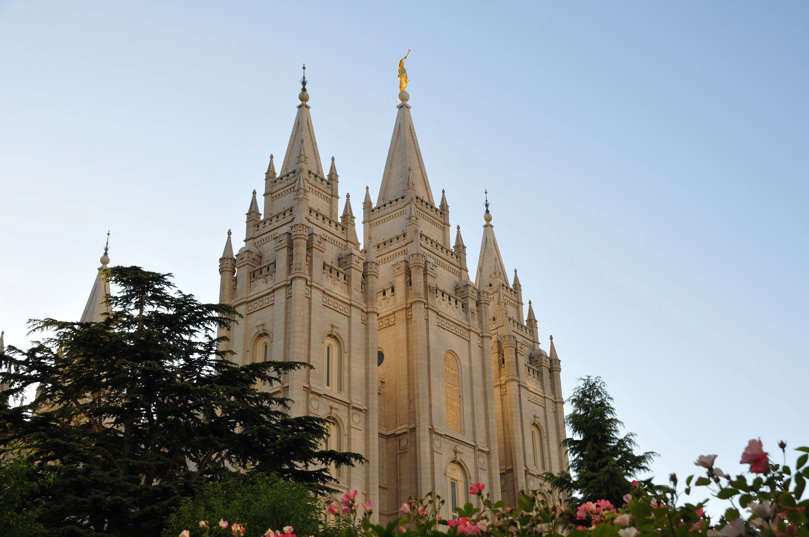

About Us
Temple Inn & Suites is a hotel chain headquartered in Bethesda, MD that builds and manages specialized hotel accommodations near temple locations of The Church of Jesus Christ of Latter-day Saints around the world.
Some of the events that can be done are as follows: sealings, weddings, receptions, and youth trips.
Temple Facts
The Salt Lake Temple was the fourth temple built in Utah (though its construction was started first) and the first built in the Salt Lake Valley. The Salt Lake Temple was the only temple dedicated by President Wilford Woodruff. With its distinctive spires and statue of the angel Moroni, the Salt Lake Temple is an international symbol of the Church.
The Salt Lake Temple is the largest temple (most square footage) of the Church. The building of the Salt Lake Temple was seen as a fulfillment of the prophet Isaiah's prophecy: "And it shall come to pass in the last days, that the mountain of the Lord’s house shall be established in the top of the mountains, and shall be exalted above the hills; and all nations shall flow unto it" (Isaiah 2:2). Brigham Young said of the Salt Lake Temple: "I want to see the temple built in a manner that it will endure through the Millennium."
See more templesWeather
Weather Card Pending